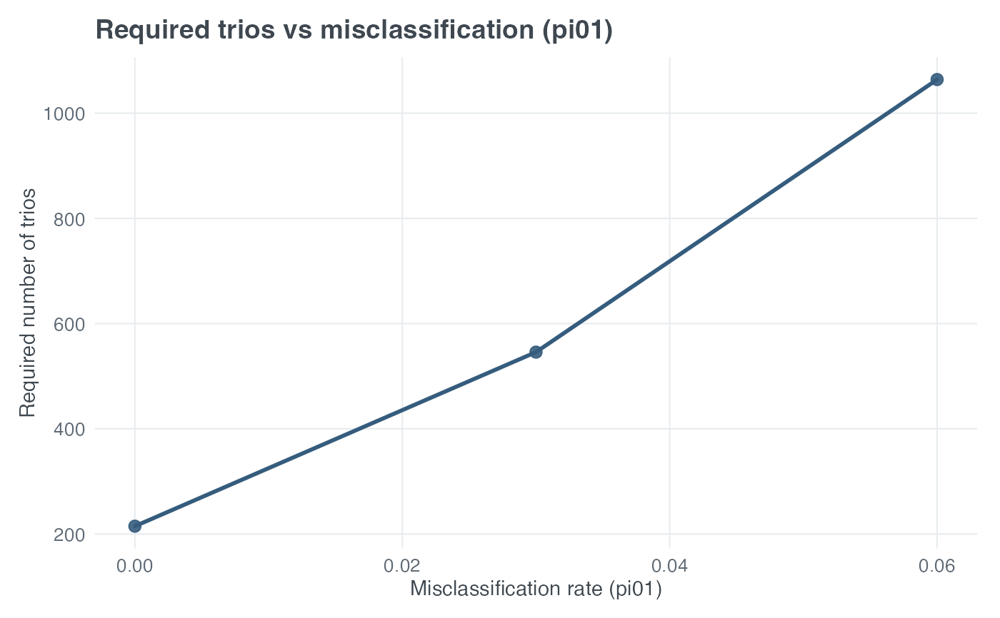

R/tdt_functions.R
plot_tdt_mssn_phenotype_misclassification.RdPlot required number of trios vs misclassification rate (pi01), holding heterogeneity fixed.
plot_tdt_mssn_phenotype_misclassification(
pd,
prev,
R1,
R2,
alpha = 0.05,
delta_prime = 1,
target_power,
misclass_seq = seq(0, 0.15, by = 0.01),
heter_fixed = 0,
title = "Required trios vs misclassification (pi01)"
)Disease allele frequency.
Disease prevalence.
Genotype relative risk for heterozygotes.
Genotype relative risk for risk homozygotes.
Significance level.
Linkage disequilibrium scaling parameter.
Numeric. Desired power for sample size calculation.
Numeric vector. Sequence of misclassification rates.
Numeric. Heterogeneity rate held fixed (default 0). (Other params same meaning as in plot_tdt_power_phenotype_misclassification.)
Plot title.
A ggplot object, returned invisibly after it is printed.
The x-axis is phenotype misclassification probability
\(\pi_{01}\). The y-axis is MSSN, the required number of affected trios
returned by tdt_mssn() for fixed target_power.
heter_fixed and all genetic-model parameters remain fixed.
# Required sample size sensitivity to phenotype misclassification
plot_tdt_mssn_phenotype_misclassification(
target_power = 0.80,
pd = 0.30,
prev = 0.05,
R1 = 1.5,
R2 = 2.25,
misclass_seq = c(0, 0.03, 0.06),
heter_fixed = 0
)
